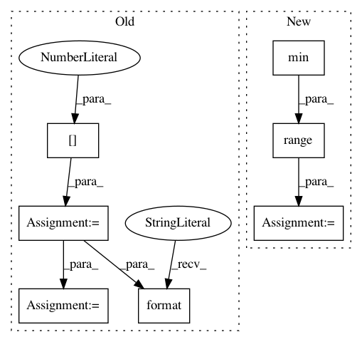

e18df168c65541107227e567de3a99cb21cfa426,theanolm/commands/decode.py,,decode,#Any#,91
Before Change
args.job)
tokens = decoder.decode(lattice)
best_token = tokens[0]
words = vocabulary.id_to_word[best_token.history]
if args.output == "ref":
args.output_file.write("{} {}\n".format(utterance_id, " ".join(words)))
elif args.output == "trn":
args.output_file.write("{} ({})\n".format(" ".join(words), utterance_id))
elif args.output == "n-best":
ac_logprob = best_token.ac_logprob / log_scale
lm_logprob = best_token.ac_logprob / log_scale
args.output_file.write("{} {} {} {}\n".format(
utterance_id, logprob, len(words), " ".join(words)))
else:
After Change
args.job)
tokens = decoder.decode(lattice)
for index in range(min(args.n_best, len(tokens))):
line = format_token(tokens[index],
utterance_id,
vocabulary,
log_scale,
args.output)
args.output_file.write(line + "\n")
def format_token(token, utterance_id, vocabulary, log_scale, format):
Formats an output line from a token and an utterance ID.
In pattern: SUPERPATTERN
Frequency: 3
Non-data size: 7
Instances
Project Name: senarvi/theanolm
Commit Name: e18df168c65541107227e567de3a99cb21cfa426
Time: 2016-08-03
Author: seppo.git@marjaniemi.com
File Name: theanolm/commands/decode.py
Class Name:
Method Name: decode
Project Name: ilastik/ilastik
Commit Name: 31987e99d495f8eafc83fa5294be44a746c51e19
Time: 2018-04-25
Author: carstenhaubold@googlemail.com
File Name: lazyflow/classifiers/pytorchLazyflowClassifier.py
Class Name: PyTorchLazyflowClassifier
Method Name: predict_probabilities_pixelwise
Project Name: ilastik/ilastik
Commit Name: eee44cb44984b803a0c4a0e6a2b41b48b200989e
Time: 2018-11-26
Author: carstenhaubold@googlemail.com
File Name: lazyflow/classifiers/pytorchLazyflowClassifier.py
Class Name: PyTorchLazyflowClassifier
Method Name: predict_probabilities_pixelwise